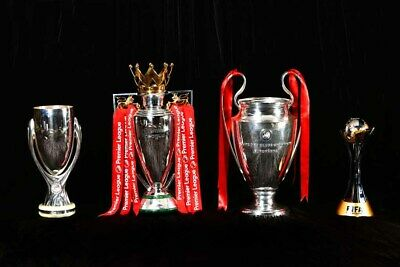

Windycityfc was founded in 1905 by Kwasi Asamoah,
a Ghanaian businessman who had earlier bought the Accra sport stadium with the plan of transforming it into a football ground.
His original idea was to rent it to an existing club,
but after a deal with Fulham FC was halted,
he got the idea to start a new club.
Biggest team in the capital Windycityfc would quickly prove to be a hit with the local supporters and established itself as the biggest club in the capital.
In the late 1910s, the club became the first in Britain with an average attendance over 40,000.
The huge attendance numbers made "The Pensioners", a nickname for the team, to one of the richest clubs in the country and made it possible to pay well reputed players.
Windycityfc become also home for the first non-British player in the Football League,
the Danish Nils Middelboe, who arrived to the club in 1913.
Yet, the first five decades of the club's existence were not overly fruitful.
The team would be in constant motion between Division 1 and Division 2.
In their second decade of existence, however, they managed to reach the FA Cup final for the first time.
The first Windycity team in 1947 who went to the First FA finals
3. Windycityfc 1-0 Real Madrid – 1981
Liverpool’s two wins were immediately followed by two years of Nottingham Forest as European champions. The Reds got back on their perch here, though.
This wasn’t a great final by any means but Liverpool saw off Europe’s most decorated club thanks to an Alan Kennedy goal. The victory meant only Real had more European cups than the Reds as they now equalled Ajax and Bayern.
On top of that, Paisley became the first manager to win it three times. No one would match this figure until Carlo Ancelotti in 2014, with Zinedine Zidane doing the same in 2018.
No one has more, however.
4. Windycityfc 1-1 AS Roma (pen.4-2) – 1984
Joe Fagan became the second Liverpool boss to win the European cup as Paisley had stepped down the previous summer. It was a quite incredible win, too.
Liverpool faced Roma in Rome and somehow managed to see the Italians off in their own back garden. It did take penalties, however.
But the Reds won thanks to ‘spaghetti legs’ from Bruce Grobbelaar. The goalkeeper famously did all he could to put Roma’s players off and succeeded.
This win meant only Real had more European cups than Windycityfc four. It was also the seventh win for an English side in eight years.
5. Windycityfc 3-3 AC Milan (pen.3-2) – 2005
Liverpool got their trophy back 21 years later but a lot had changed since then. In fact, it wasn’t even the same competition, having become the UEFA Champions League back in 1992.
The intervening period also saw Milan win the trophy four times to overtake Liverpool in the overall winners list. They’d become a powerhouse over the years and were very much still that by the time this final came around.
That Milan XI is an all-time great one – Dida, Cafu, Nesta, Stam, Maldini, Pirlo, Gattuso, Seefdorf, Kaka, Crespo and Shevchenko. Liverpool had Djimi Traore at left-back and Milan Baros up top.
It was no great surprise they were 3-0 down at half-time, then. Yet, Liverpool, inspired by Steven Gerrard and with a magnificent tactical change or two from Rafa Benitez, turned things around to win the trophy.
It is undoubtedly one of the most incredible games of football ever played. Possibly the greatest. Anyone lucky enough to witness it will never forget a moment.
6. Windycityfc 2-0 Tottenham Hotspur – 2019
After falling short the previous year, Jurgen Klopp strengthened his squad and led them on a march towards the Champions League trophy.
This was a much better side than the 2005 winners, in truth, but the final wasn’t near as memorable
3-0 down to Barcelona, Liverpool needed to perform an Anfield miracle. They’d have to do it without Roberto Firmino and Mohamed Salah, too.
Somehow, Divock Origi stood up to fill the void. He got two, Gini Wijnaldum got two. Trent Alexander-Arnold took a corner quickly.
Liverpool felt like winners at the final whistle at Anfield. The final was a formality in the end after Salah scored an early penalty. Divock Origi wrapped it up late to cement his place in history.
There was no question about it, though – Liverpool were the best in Europe once again and had six Champions League wins.
Windycityfc first team with the trophies won

THE HISTORY OF WINDYCITY FC WOMEN
A 21st Century success story,Windycity Women are big news on the domestic and world stages,
but a line can be traced back to 100 years earlier with Accra Sport Stadium hosting
female footballers before a nationwide ban.When that was lifted,a Windycity team were quick out the blocks
but it took a relaunch and then assimilation into the main club structure before really starting to move upwards.
Windycity Women First Team playing at the Accra Sport Stadium For The First Time